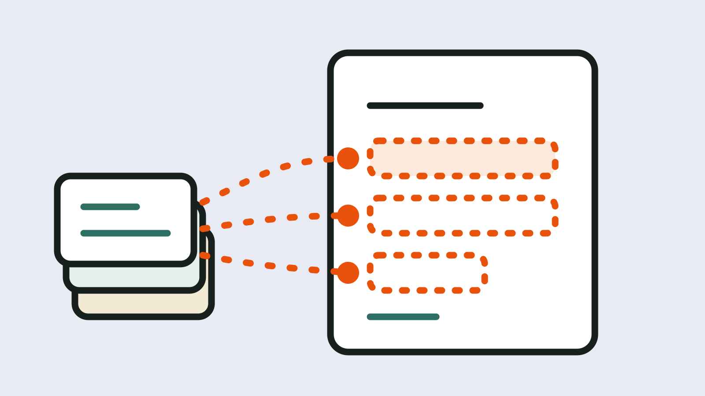

Blog
Write the methods paragraph from your run record
The analysis took weeks. The methods paragraph gets written in an afternoon, months later, from memory and from whatever is still in the terminal. That is when "we used default parameters" and "the latest version" creep in. This post offers a fill-in template for the paragraph, shows where each value can be read from instead of remembered, and suggests marking which values you read and which you guessed.

What a reader needs
You do not need a journal policy to know what a stranger wants from this paragraph. The authors of "Ten Simple Rules for Reproducible Computational Research" ask, as their first rule, for every result to be tracked back to how it was produced, and for programs that means the name and version, "as well as the exact parameters and inputs that were used."[1] Their third rule says that, as a minimum, you should note the exact names and versions of the main programs you use.[1] For analyses with randomness they ask for the random seed to be recorded.[1]
A set of guidelines for benchmarking computational methods says much the same: parameter values, including random seeds, and software versions should be clearly reported, and a summary table of them can go in supplementary information.[2] That text is about benchmarks, not about every paper, but the list is a good starting point for any pipeline-based analysis.
We have not looked up what individual journals ask for, so we make no claim about that. The list below is what we think a careful reader would want.
A fill-in template
Copy this and replace each item in capitals. Keep a value only if you can point to where it came from.
Reads were processed with {PIPELINE} version {PIPELINE_VERSION}, launched with {LAUNCH_COMMAND_OR_PROFILE}. The main tools were {TOOL_1} {VERSION_1} and {TOOL_2} {VERSION_2}. Reads were aligned to {REFERENCE_NAME}, build {BUILD}, and annotated with {ANNOTATION_NAME} release {ANNOTATION_VERSION}. Parameters that differ from the tool defaults were {PARAMETER_LIST}, and the full set is listed in {SUPPLEMENTARY_TABLE}. Analyses involving randomness used seed {SEED}. {MANUAL_STEPS_SENTENCE}
The last item deserves a word. The same "Ten Simple Rules" paper advises avoiding manual data manipulation, and where a manual step cannot be avoided, noting which files were changed or moved and why.[1] If you renamed a sample by hand or filtered a table in a spreadsheet, the paragraph is the place to say so.
Where to read the values
Do not reconstruct these from memory. Most of them are written down somewhere, though what exactly is written depends on the tool and on how you ran it.
Nextflow
According to the Nextflow reports documentation, the HTML execution report has a summary section covering the execution status, the launch command, the overall execution time and other workflow metadata, and the trace file is a CSV with one row per task.[3] The page does not say that the report records the pipeline revision or the containers, so we would not assume it does; we have not checked this on a real run.
For tool versions, the nf-core module guidelines say that each module must report the versions of the tools it uses, and describe a versions.yml file for this, with a newer approach based on topic channels preferred.[4] That is a convention for nf-core modules. A pipeline that does not follow it may record versions differently or not at all.
Snakemake
The Snakemake documentation says that provenance information is stored by default in the .snakemake/metadata directory.[5] It also says a default report, created with snakemake --report, covers runtime statistics, provenance information and workflow topology.[6] We did not run either for this post, and the report page does not list software versions among those defaults, so check where yours come from, for example your environment files or container definitions.
Plain shell and notebooks
Here the record is whatever you made it. If you ran commands by hand, your shell history and your own notes are the source, and that is exactly where the guessed values come from. The benchmarking guidelines mention that for R, the sessionInfo() command gives a summary of package versions, the R version and the operating system.[2]
Mark what you read and what you guessed
Before you finalise the paragraph, go through it and tag each value in your own notes with one of four labels.
- Verified: you saw it in a log, a report or a file the tool wrote.
- Inferred: you worked it out, for example the pipeline version from the folder name you cloned.
- Manual: a person did or typed it, such as a renamed sample.
- Unknown: you cannot say.
An "unknown" is not a failure. It is better to write "annotation release not recorded" in a draft than to fill the gap with the version you probably used. It is worth asking whether readers and reviewers would also prefer a visible gap to a confident guess; we suspect so but have not tested it.
These four labels are the evidence statuses an earlier Jubilab prototype attached to each fact it recorded: verified, inferred, manual or unknown. The habit does not depend on any tool, though.
Keep the record next to the paper
A paragraph has to be short. The record behind it need not be. The guidelines above suggest a table of parameters and versions as supplementary material, and the "Ten Simple Rules" authors also ask for public access to scripts, runs and results.[1][2] Whatever you use, keep the full record somewhere that outlives your laptop, and cite the identifiers of the runs in the paragraph so a reader can ask for them.
Where Jubilab is now
Imagine you open the run behind a figure and find the pipeline, its parameters and the tool versions listed, each marked with how it was learned. An earlier Jubilab prototype recorded runs this way, with an evidence status on each value; what a given run record held depended on what the tool exposed. Jubilab's earlier run-record prototype is not being offered. Jubilab is now building the order-to-result layer for lab work. We are recruiting early adopters (request access and we invite small groups first), but the order layer is still being built and nothing is released yet.
It does not write your methods paragraph, and we are not suggesting it should do so unreviewed. A record cannot recover the history of a run it never saw. See also our guide on what parameters produced a result and, for the reference build, checking a VCF or BAM. Jubilab is not affiliated with or endorsed by Nextflow, nf-core, Snakemake or the authors cited here.
Questions we are still asking
- How much of the methods paragraph should be generated from a record, and how much should stay a human sentence? We wonder whether a generated paragraph that nobody reads closely is worse than a short hand-written one.
- Do journals and reviewers want parameters in the paragraph, in a supplementary table, or in a linked record? We have not found a policy to cite and do not want to guess.
- Some teams may keep versions only in container tags or environment files. We have not tested how well those survive years of use, and it is worth asking whether a tag is enough to name a tool version later.
- Should an "unknown" value ever appear in a published paragraph, or only in the supporting record?
- What did we leave out? We would like to hear what you wish earlier papers had told you.
Where Jubilab is now
This post comes from our earlier work on a record of how results are made. Jubilab's earlier run-record prototype is not being offered. Jubilab is now building the order-to-result layer for lab work. We are recruiting early adopters (request access and we invite small groups first), but the order layer is still being built and nothing is released yet.
Request early accessSources
- Ten Simple Rules for Reproducible Computational Research — Sandve, Nekrutenko, Taylor and Hovig, PLOS Computational Biology, 2013. Accessed 19 October 2026. https://pmc.ncbi.nlm.nih.gov/articles/PMC3812051/
- Essential guidelines for computational method benchmarking — Weber, Saelens, Cannoodt, Soneson, Hapfelmeier, Gardner, Boulesteix, Saeys and Robinson, arXiv:1812.00661. Accessed 19 October 2026. https://arxiv.org/abs/1812.00661
- Nextflow documentation: Reports — Seqera, Nextflow documentation. Accessed 19 October 2026. https://docs.seqera.io/nextflow/reports
- nf-core modules specification — nf-core community. Accessed 19 October 2026. https://nf-co.re/docs/guidelines/components/modules
- Snakemake documentation: Provenance — Snakemake project, Read the Docs. Accessed 19 October 2026. https://snakemake.readthedocs.io/en/stable/executing/provenance.html
- Snakemake documentation: Reporting — Snakemake project, Read the Docs. Accessed 19 October 2026. https://snakemake.readthedocs.io/en/stable/snakefiles/reporting.html
Written by Jubilab. Published 19 October 2026; last updated 19 October 2026. Where this post names other products or projects, Jubilab is not affiliated with or endorsed by them, and it does not claim any integration with them. Things we could not check are written as questions; if you spot a mistake, email hello@jubilab.io.
Related posts
How to compare two pipeline runs
What counts as a difference between two runs, a manual way to diff them, and what lineage diff and nf-diff showed on a toy pair.
Inherited a pipeline? A first-week checklist
A practical checklist for rebuilding how results were made when you inherit someone else's analysis, and what to record as you go.
Provenance vs lineage in bioinformatics: examples
Two overlapping words, one toy variant calling pipeline, and the questions each one helps you answer about a VCF.